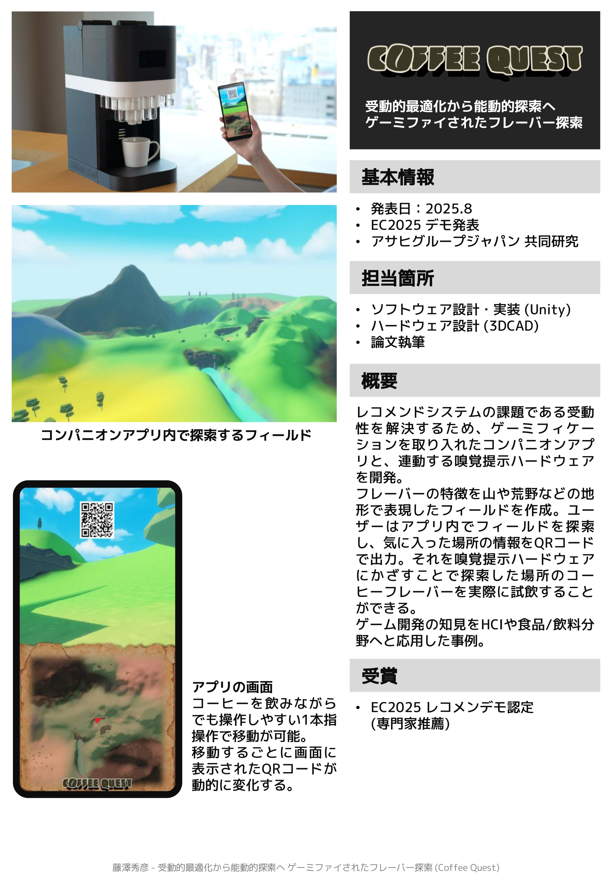

受動的最適化から能動的探索へ ゲーミファイされたフレーバー探索
EC2025
概要
コンピュータシステムによる個人ごとのフレーバー最適化は，偶発的なフレーバーとの出会いを妨げ，ユーザを受動的にして探索意欲を減退させる課題がある．本研究では能動的探索への転換を目指し，嗅覚メディア「AromaSynth」と連携するインタフェースをゲーミファイすることを試みた．さながらビデオゲームで自由に世界を冒険するように，ユーザは香りの探索を行うことができる．実際にそのフレーバーは，AromaSynth によって調合，添加され楽しむことができる．本稿では特に，ユーザの探索意欲を喚起するための設計原理と手法について考察する．
